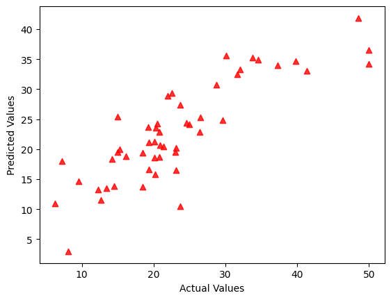

BostonHousing.ipynb
Home value prediction notebook
I read BostonHousing.csv, set X to all columns except
medv, split with test_size = 0.1, and trained
LinearRegression() before plotting actual vs. predicted values.
The notebook uses all 13 Boston predictors and prints coefficients plus intercept
so I can inspect feature influence after training. In the saved run,
Boston Housing reached $R^2$ = 0.72.
Code preview
housing_data = pd.read_csv('/content/drive/MyDrive/Colab Notebooks/BostonHousing.csv')
X = housing_data.drop('medv', axis = 'columns')
y = housing_data['medv']
X_train, X_test, y_train, y_test = train_test_split(X, y, test_size = 0.1)
model = LinearRegression()
model.fit(X_train, y_train)
y_pred = model.predict(X_test)
plt.scatter(y_test, y_pred, alpha = 0.8, marker = "^", color = "red")
plt.xlabel("Actual Values")
plt.ylabel("Predicted Values")